In any experiment, a measurement consists of a raw quantity of interest and a statistical significance of the measurement itself. For neutron diffraction, the differential scattering cross section at some point 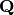 in the reciprocal space, measured with a single detector with a solid angle 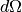, is given by:
(1)
where  is the number of scattered neutrons in a small volume
is the number of scattered neutrons in a small volume
 around , and
around , and  is
the time integrated incident flux that contribute to the scattering in the given
volume. is the raw quantity, while
is
the time integrated incident flux that contribute to the scattering in the given
volume. is the raw quantity, while  is the statistical significance, or norm.
is the statistical significance, or norm.
If there are multiple detectors, or multiple experiments contributing to the
scattering in the volume, one needs to add together the raw
data, add together the norms, and then divide
(2)
The summation index  represents every detector and sample orientation
or repeated measurement that contribute to the scattering in the desired region
of the reciprocal space.
In a similar fashion, for inelastic scattering, the double
differential cross section must be written as:
represents every detector and sample orientation
or repeated measurement that contribute to the scattering in the desired region
of the reciprocal space.
In a similar fashion, for inelastic scattering, the double
differential cross section must be written as:
(3)
What this means is that, in the triple axes type of measurements for example, where we have a single detector (solid angle 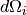 is a constant), we should not normalize data by monitor counts and then add different experiments together. The monitor count is a proxy for the incident flux. We should instead add raw data together, add monitors together, and only then divide.
For direct geometry inelastic scattering, for any given experiment, all the incident
flux  contributes to the scattering, and it is just a number.
For diffraction and indirect geometry inelastic experiments one has to
account only for the flux that contribute to the scattering in the
region, which is detector and momentum dependent. Similarly, 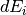 is the length
along energy transfer axis of the detector trajectory inside the
region. It is therefore important to understand where is the scattering in reciprocal space
for each of the detectors. In this section we describe the case of single crystal experiments.
We assume that the regions are given by a regular gridding
of the data in reciprocal space.
contributes to the scattering, and it is just a number.
For diffraction and indirect geometry inelastic experiments one has to
account only for the flux that contribute to the scattering in the
region, which is detector and momentum dependent. Similarly, 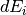 is the length
along energy transfer axis of the detector trajectory inside the
region. It is therefore important to understand where is the scattering in reciprocal space
for each of the detectors. In this section we describe the case of single crystal experiments.
We assume that the regions are given by a regular gridding
of the data in reciprocal space.
For a scattering event in a particular detector,
the momentum transfer in the laboratory frame is related to the momentum transfer
in the sample frame by the rotation of the sample goniometer. This is further related to
the crystallographic 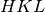 frame by the  matrix. In Mantid notation
this can be written as
matrix. In Mantid notation
this can be written as
(4)
where  is the momentum of the incident neutron and
is the momentum of the incident neutron and  is the one
of the scattered neutron. R is the rotation matrix of the goniometer. For diffraction case,
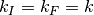. For direct geometry inelastic is fixed in
a particular experiment, while for indirect geometry inelastic is fixed for
the detector. From equation (4) one can see that the trajectories in the reciprocal
space are simply straight lines, parametrized by
is the one
of the scattered neutron. R is the rotation matrix of the goniometer. For diffraction case,
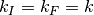. For direct geometry inelastic is fixed in
a particular experiment, while for indirect geometry inelastic is fixed for
the detector. From equation (4) one can see that the trajectories in the reciprocal
space are simply straight lines, parametrized by  for diffraction,
for direct geometry, or for indirect geometry.
If we calculate what the
for diffraction,
for direct geometry, or for indirect geometry.
If we calculate what the  coordinates are for two points, say at
coordinates are for two points, say at
 and 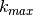, we can then write:
and 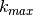, we can then write:
(5)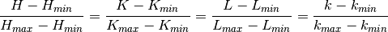
Thus, if we know for example that we want to calculate the intersection of
the trajectory with a plane at  , we can just plug in
, we can just plug in  in the above equation and get the corresponding
in the above equation and get the corresponding  .
.
Any trajectory can miss a particular box in space, can be along one of the faces
(say if 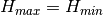 then all  points have the same value),
or it can intersect the box in exactly two points. If we know the momentum
corresponding to the intersections, say 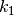 and 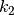, all we need is to
integrate the incident flux between these two values, and then multiply with the solid
angle of the detector, in order to obtain the statistical weight of this detector’s
contribution to this particular region in the space.
points have the same value),
or it can intersect the box in exactly two points. If we know the momentum
corresponding to the intersections, say 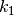 and 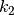, all we need is to
integrate the incident flux between these two values, and then multiply with the solid
angle of the detector, in order to obtain the statistical weight of this detector’s
contribution to this particular region in the space.
A similar equation to (5) can be obtained for inelastic scattering, by replacing
with for direct geometry or with for the
indirect case. We can then relate or with the energy
transfer  , to get the intersections along the energy transfer
direction.
, to get the intersections along the energy transfer
direction.
It is important to note that even if we calculate the intersections of the trajectory with a particular box the norm might still be zero, since we could have no incident neutron flux corresponding to that box in space.
The way to account for excluded data is algorithm dependent. See the documentation for each particular implementation.
To improve statistics in a certain region, one can use data from
different regions of the reciprocal space that are related by the
symmetry of the physics in the material that is being studied.
A simple way to correctly estimate the statistical weight of the
symmetrized data is to apply the symmetry operation on the detector
trajectories (apply to
at and ) and recalculate the normalization.
As of release 3.3, the normalization can be calculated for single crystal diffraction (MDNormSCD) and single crystal direct geometry inelastic scattering (MDNormDirectSC).
The source for how this calculation is done is
Category: Concepts